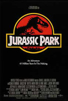
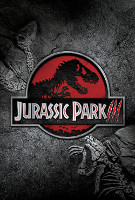

JURASSIC PARK: O PARQUE DOS DINOSSAUROS
Jurassic Park (no Brasil, Jurassic Park: O Parque dos Dinossauros; em Portugal, Parque Jurássico) é um filme estadunidense de ficção científica e aventura dirigido por Steven Spielberg e baseado no livro homônimo escrito por Michael Crichton.
É estrelado por Sam Neill, Laura Dern, Jeff Goldblum, Richard Attenborough, Ariana Richards, Joseph Mazzello, Samuel L. Jackson e Bob Peck. O filme é centrado na fictícia Isla Nublar, onde um filantropo bilionário e uma pequena equipe de geneticistas criam um parque temático em uma ilha, onde as principais atrações são variadas espécies de dinossauros recriados através da engenharia genética.

JURASSIC PARK: O O MUNDO PERDIDO
The Lost World: Jurassic Park (no Brasil, Jurassic Park 2 O Mundo perdido; em Portugal, O Mundo Perdido: Jurassic park) é um filme estadunidense de 1997 de ficção científica aventura, dirigido por Steven Spielberg, sendo o segundo da franquia Jurassic Park.
O filme foi produzido por Gerald R. Molen e Colin Wilson. O roteiro foi escrito por David Koepp, baseado no romance The Lost World, de Michael Crichton. O filme é estrelado por Jeff Goldblum, Julianne Moore, Vince Vaughn, Pete Postlethwaite, Richard Schiff, Arliss Howard, Thomas F. Duffy, Vanessa Lee Chester e Richard Attenborough.

JURASSIC PARK III
Jurassic Park III (No Brasil, Jurassic Park 3 e em Portugal, Parque Jurássico III) é um filme estadunidense de ficção científica e aventura lançado originalmente em 18 de julho de 2001 nos cinemas estadunidenses.
É a continuação de The Lost World: Jurassic Park, de 1997. Foi dirigido por Joe Johnston e produzido por Steven Spielberg, Kathleen Kennedy e Larry J. Franco. Este filme, faz parte da franquia Jurassic Park, sendo o terceiro filme desta. Foi o primeiro da saga que não foi dirigido por Steven Spielberg.

JURASSIC WORLD
Jurassic World (no Brasil Jurassic World: O Mundo dos Dinossauros; em Portugal Mundo Jurássico) é um filme estadunidense de ficção científica , aventura, e ação dirigido por Colin Trevorrow[5].
É o quarto filme da franquia Jurassic Park, e foi produzido pela Universal Pictures em parceria com a Amblin Entertainment e com a Legendary Pictures. O longa teve seus efeitos especiais feitos pela Industrial Light & Magic (CGI) e pela Legacy FX (animatrônicos).[6]
Prêmios
| Ano | Categoria | Resultado |
|---|---|---|
| 1994 | Melhor filme | Venceu |
| 1994 | melhor direção | Venceu |
| 1994 | Figutino | Indicado |
| 1994 | Melhor escritor | Venceu |